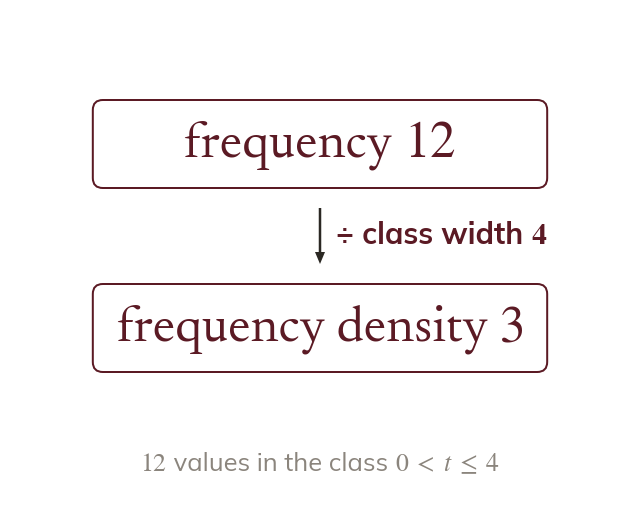
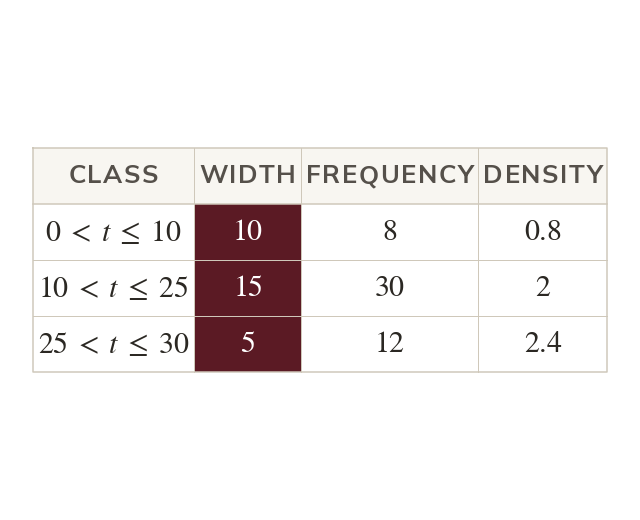
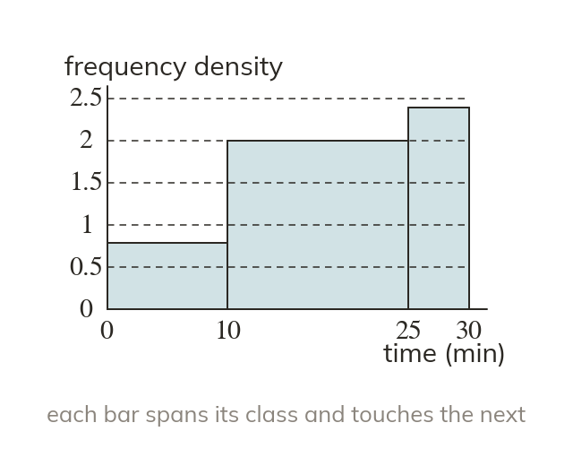
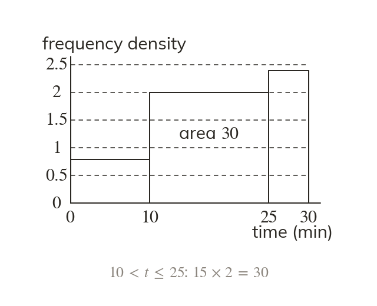
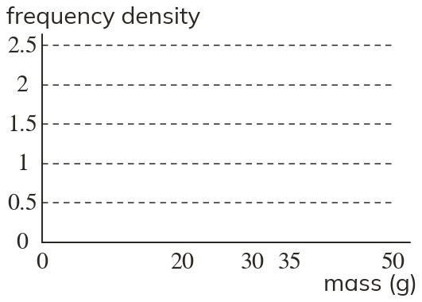
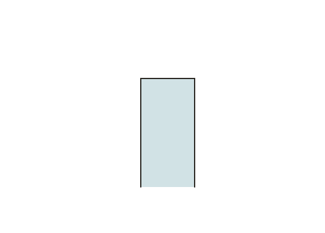
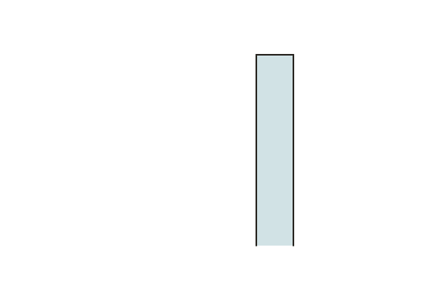

Density is frequency per unit
Frequency density is the frequency for each unit of the class. Divide the frequency by the class width.
Data grouped into unequal classes need a fair picture. Frequency density makes every bar's area match its frequency, so a wide class cannot look bigger than it is.
Work down the page at your own pace. Write every answer in your book first, then click to check it.
Read each card, then follow the worked examples one step at a time.

Frequency density is the frequency for each unit of the class. Divide the frequency by the class width.

The class width is the upper bound minus the lower bound. Read both from the inequality.
Pick an answer. If it's wrong, the feedback tells you which mistake it was.
Read each card, then follow the worked examples one step at a time.

Each bar runs from its class's lower bound to its upper bound. The bars touch, with no gaps.

Each bar's height is its frequency density. Its area is then its frequency.



Pick an answer. If it's wrong, the feedback tells you which mistake it was.
Printable worksheet — the questions with room to work.
Finished? Next lesson: 10H.20.3 Interpreting Histograms.
Log in, then search for a code to practise that skill.
Videos, worksheets and more on each part of this lesson.